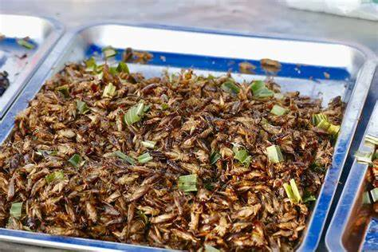

Insect eating: The ultimate guide to eating crickets
When you hear about eating insects most people gross out. However, Insects are concidered a delicacy in many parts
of the world. Most of the insects eaten are farm grown but in some places, they don' shy away from eating insects
collected from the wild.
Eating insects is concidered:
- healthy since insects have less fat content.
- enviromentally friendly: It takes less amount of food/plants to rear insects compared to cows.
- People who don't eat milk and meat products can try out insects as protein substitute.
